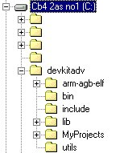

The following settings can be made to CGBIDE to turn it into a useful IDE for GBA code development and will look familiar to Visual Studio users.
1. Use 'Edit - Editor Colour' to
adjust the text colour settings.

2. Use 'Edit - EditorFont' to adjust
the text font settings.

3. Use 'Tools - Tools Settings' to configure the IDE button settings
Use the User Tool button
to build the project
Use the Music button to
run the Emulator
Use the Image button to
Program the Flash cart
Unfortunately it does not seem to be possible to use CGBIDE to build the project using the 'Output Window' so a DOS window will appear containing any errors in compilation. It is also necessary to set the User Tool for each new project as this points to a project specific 'make.bat' file that will run the projects .mak file. The .mak file contains all of the information needed to tell the compiler how to build the project.

4. Directory setup
Once the IDE is set up you must also add to the DOS path C:\devkitadv\bin so that Dev-Kit Advance can find all of its components. Also the utils directory should contain the following support tools,
BoycottAdvance.exe (GBA emulator)
faw1.exe
(Flash Programmer if available)
Gbarm.exe
(ROM fixer)